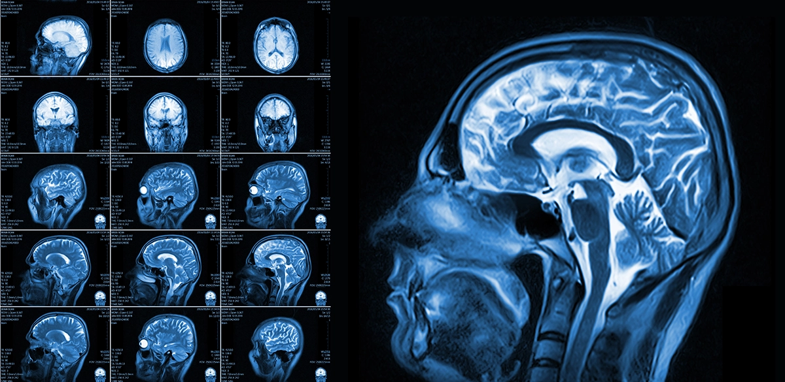

June 20 2026
As a cross country runner, I have grown increasily interested in what MRI scans are, as I keep hearing the word thrown out by my peers and my coaches. One of my training partners got an MRI scan to help diagnose and observe his meniscus sprain, and this made me even more interested in the process of getting an MRI done and the methods doctors use for diagnosis.

An example of a Brain MRI, with multiple views shown (Image Credit: Jersey Radiology)
An MRI scan, short for Magnetic Resonance Imaging, is a test that produces clear images of the organs in our bodies. Unlike an X-ray, MRI scans use radio waves and a magnet, which means there is no risk for radiation. When I first started researching about MRI, I thought it was just used for sports injuries, like the one my friend got. As I kept exploring, I found out that MRI scans are used in a wide variety of situations, and some of them are listed here:
As there are so many use cases in MRI, the exact process of obtaining a scan can vary, and instruments can vary too. Even with this, the general logic behind how MRI scans work is usually the same.
When a patient gets into an MRI machine, the machine's strong magnetic field causes the hydrogen protons in their body to point up, like a compass responding to a magnet. After this, the machine emits a radiofrequency pulse, sending out radio waves that will disrupt the current position of the protons. The pulse knocks the hydrogen protons out of their natural position, essentially removing their alignment. This radio wave is ceased, and the protons move back to alignment with the magnetic field. As they do this, they release electromagnetic signals. The strength and rate of this signal release can tell the machine what medium the proton is in (bone, tissue, fat). The machine maps these signal properties, and constructs highly detailed images, which are the scans.
Now that the scans are complete, the doctor (most likely a radiologist) will use the data from the scans to conduct a diagnosis, or whatever the MRI is being used for. It is almost unbelievable that such accuracy in anatomical images can be achieved without using harmful radiation.
I have always found MRI scans interesting in general, but have specifically found joint MRIs interesting. When running cross country and track and field, recovery is just as important, if not more important than training. Most injuries to runners that are diagnosed in-part or fully by MRI are generally overuse injuries, which makes MRI important in determining when athletes are close to their breaking point (in both ways). Overall, I think my obsessions with MRI come from having a cross country coach that prioritizes injury prevention and "prehab" over everything, which I feel is really important in a world where most of the running community advocates for old-school high-mileage weeks with limited rest. I think that with my near-obsession with MRI scans, I may try implementing ResNet with them to see if I can classify injuries, and there are definitely ways that highly-trained models can help with classification. Machine Learning and AI in general are huge in healthcare, and creating tools that help doctors diagnose and classify conditions would make recovery and therapy easier, especially for injuries like ACL and Meniscus tears. As I continue to look more at this topic, I will update this entry with what I find.